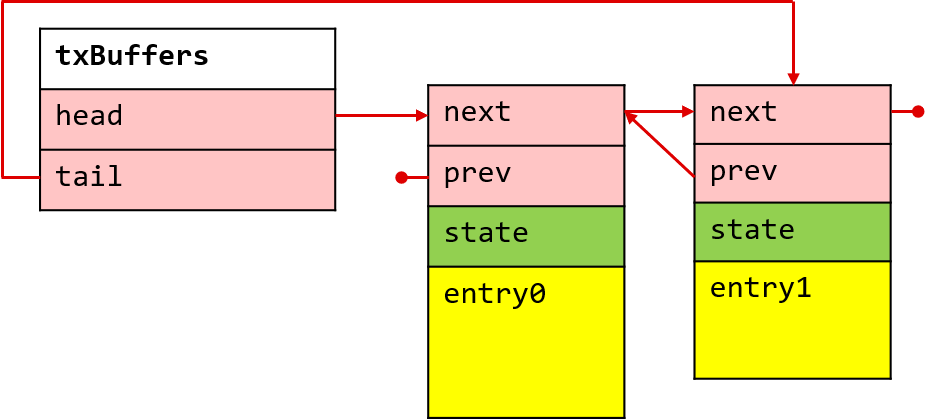
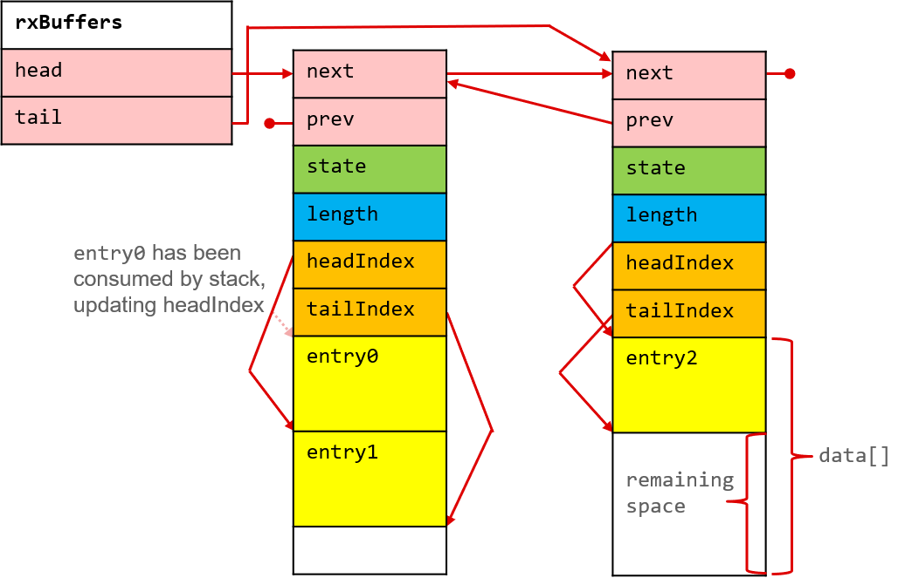

The RCL component includes some APIs to deal with the radio buffers. There are two types of radio buffers:
- Transmit buffers encapsulate a single frame (payload). This is because when transmitting, it is already known how much data needs to be transferred.

- Receive buffers can contain zero or more received frames. This is because when receiving, it is not known how much data will be received.

Independently from the buffer type, the radio buffers need to follow a specific format so that the LRF can take a particular action depending on the PHY header.
Usage
Transmit buffers
The following steps are necessary to properly use a Tx buffer:
- Allocate memory for the Tx buffer entry considering all necessary fields and padding. This can be accomplished by first declaring an array, and using the RCL_TxBuffer_len_u32 helper to determine the total length of the Tx Buffer in 32-bit words. And second, declaring a pointer of type RCL_Buffer_TxBuffer and making it point to the memory location of the previously created array.
#define NUM_PKT 4
RCL_Buffer_TxBuffer *txBuffers[NUM_PKT];
for (int i = 0; i < NUM_PKT; i++)
{
txBuffers[i] = (RCL_Buffer_TxBuffer *)vars.pktBuffer[i];
}
- Initialize a Tx buffer entry with the correct header, payload and padding lengths. This is needed so that the Tx buffer entry is compatible with the internal packet format used by the LRF.
- Declare a pointer that will be used to store the address where the first header byte of the entry should be stored.
- Initialize the buffer entry
- Insert payload, header and length fields.
for (int i = 0; i < NUM_PKT; i++)
{
uint8_t *txData;
}
- Place the Tx buffer entry in the linked list of packets to transmit.
for(int i = 0; i < NUM_PKT; i++)
{
}
Receive buffers
The following steps are necessary to properly use a MultiBuffer for Rx operations:
- Allocate memory for the MultiBuffer entry. This can be accomplished by first declaring an array, then declaring the structure that holds the linked list that will be used by the LRF for the reception of packets. Finally, a pointer of type RCL_MultiBuffer should be declared and it should point to previously declared MultiBuffer array.
#define MULTI_BUF_SZ 2048
uint32_t multiBufferArray[MULTI_BUF_SZ / 4];
List_List multiBuffers = { 0 };
RCL_MultiBuffer *multiBuffer;
RCL_MultiBuffer *multiBuffer = (RCL_MultiBuffer *) multiBufferArray;
- Initialize a MultiBuffer entry so that it can be provided to the RCL for storing received packets.
- Place the MultiBuffer entry in the linked list used by the RCL for packet reception.
- Upon reception, data entries can be accessed by first declaring a data entry, and then using the RCL_MultiBuffer_RxEntry_get API to get the entry.
List_List finishedBuffers;
List_clearList(&finishedBuffers);
- Clear entry or entries for reuse by the RCL. This is necessary so that after reception the MultiBuffer can be reused for storing packets, and can be accomplished by getting a list of the MultiBuffers that are done, checking which MultiBuffers are free before clearing them, and adding them back to the list.
 1.8.12
1.8.12